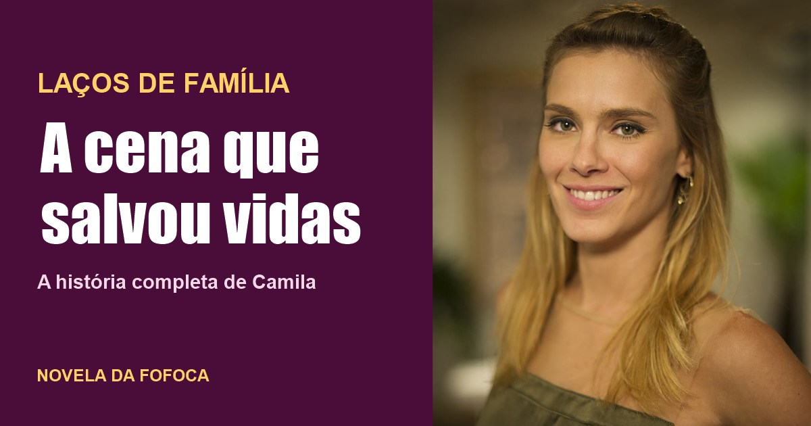
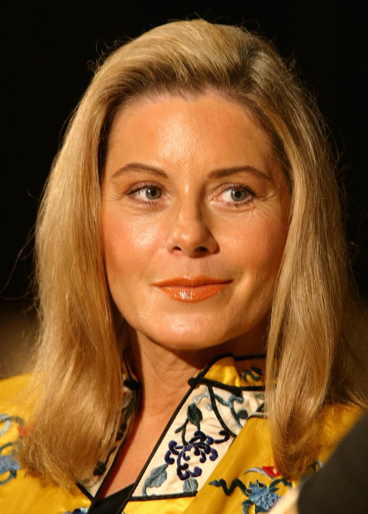

Laços de Família: a história de Camila e a cena que salvou vidas
Uma mãe e uma filha apaixonadas pelo mesmo homem, uma doença que mudou tudo e a cabeça raspada que fez o Brasil procurar os bancos de medula.

Uma mãe. Uma filha. O mesmo homem. E, no meio da história, uma doença que virou tudo de cabeça para baixo.
Em 2000, Laços de Família prendeu o Brasil na frente da televisão. Mas o que ninguém esperava era que uma cena de novela saísse da tela e fosse parar nos hospitais de verdade. Esta é a história completa de Camila, de Helena e da cabeça raspada que o país nunca esqueceu.
Capítulo 1: a novela das oito
Laços de Família estreou na TV Globo em 5 de junho de 2000, no horário nobre. A novela foi escrita por Manoel Carlos, o autor das famosas Helenas, e teve direção geral de Ricardo Waddington, Rogério Gomes e Marcos Schechtman.
Foram 209 capítulos, até fevereiro de 2001. E desde o primeiro, o público percebeu que aquela não seria uma novela comum: o centro da trama era o amor, mas também o que uma mãe é capaz de fazer por uma filha.
🧩 Jogue o caça-palavras da fofoca de hojeCapítulo 2: Helena e o médico mais novo

Helena, vivida por Vera Fischer, era uma empresária bonita, independente e bem resolvida. Um dia, ela conhece Edu, um médico recém-formado, charmoso e 20 anos mais novo. A paixão é imediata.
Edu foi interpretado por Reynaldo Gianecchini. E aqui vai um detalhe que muita gente não sabe: Laços de Família foi a estreia dele na televisão. De cara, ele já ganhou um dos papéis mais comentados do ano. A novela também foi a primeira de Juliana Paes.
O casal parecia feito um para o outro. Mas havia alguém que ia mudar tudo, e esse alguém morava dentro da casa de Helena.
Capítulo 3: a filha que se apaixonou pelo mesmo homem
Camila, a filha de Helena, vivida por Carolina Dieckmann, conhece Edu e se apaixona por ele. E o pior: é correspondida.
Helena fica diante da escolha mais difícil da vida dela. Lutar pelo homem que ama ou abrir mão dele pela felicidade da filha? Ela escolhe a filha. Helena se afasta, e Camila e Edu se casam.
Uma mãe que abre mão do grande amor pela filha. Uma filha que casa com o homem que a mãe amava. Era o tipo de história que fazia cada família escolher um lado no sofá. Mas a novela ainda guardava a sua maior virada.
Capítulo 4: o diagnóstico
Camila engravida de Edu, mas perde o bebê. Nos exames, vem a notícia que muda o rumo de toda a história: ela tem leucemia. A única saída é um transplante de medula óssea.
A família corre atrás de um doador. O irmão, Fred, faz o teste, mas não é compatível. E é aí que um segredo antigo vem à tona: Fred e Camila não são filhos do mesmo pai. O pai biológico de Camila é Pedro, primo de Helena e um amor da juventude dela, vivido por José Mayer.
Helena, então, toma uma decisão que deixou o país de boca aberta: engravida de Pedro, para que o bebê possa ser um doador compatível para salvar a irmã.
Capítulo 5: uma história real por trás da ficção
Parece coisa de novela, mas a ideia veio da vida real. Manoel Carlos se inspirou numa notícia de 1990: nos Estados Unidos, uma mãe engravidou para tentar salvar a filha que tinha leucemia.
Foi assim que a trama de Camila deixou de ser só um triângulo amoroso e virou um drama sobre doença, coragem e sacrifício. E foi exatamente nesse ponto que a novela gravou a cena mais lembrada de todas.
Capítulo 6: a cabeça raspada
No fim de 2000, com o tratamento, Camila começa a perder o cabelo. Ela se senta diante do espelho e raspa a cabeça. Ao fundo, toca Love by Grace, de Lara Fabian, a música tema da personagem.
Não foi truque. Carolina Dieckmann, então com 20 anos, raspou o cabelo de verdade, na frente das câmeras, sem peruca e sem dublê. A cena nem estava escrita no roteiro: ela foi gravada em formato de comercial, para uma campanha de doação de medula, e depois entrou na novela.
Carolina lembra que, no estúdio, ninguém queria nem respirar. E o Brasil inteiro, em casa, chorou junto com Camila.
Capítulo 7: o Efeito Camila
O que veio depois surpreendeu até quem fazia a novela. A procura por informações sobre doação de medula, sangue e órgãos cresceu tanto que o fenômeno ganhou nome: Efeito Camila.
A Globo divulgou que, nas semanas seguintes ao último capítulo, o Instituto Nacional do Câncer registrou 149 novos cadastros de doadores de medula. Antes, a média era de cerca de dez por mês. Pelo trabalho de conscientização, a emissora recebeu um prêmio internacional de responsabilidade social, o BITC Awards for Excellence, em 2001.
E na novela? A filha de Helena e Pedro nasce e recebe um nome que dizia tudo: Vitória. O transplante dá certo, Camila se cura e termina a história ao lado de Edu. Helena também tem o seu final feliz: ela se reconcilia com Miguel, vivido por Tony Ramos, e aceita o pedido de casamento dele.
Capítulo 8: 20 anos depois
Laços de Família voltou ao Vale a Pena Ver de Novo em 2005 e outra vez a partir de 7 de setembro de 2020. Quando a cena da cabeça raspada foi reprisada, em fevereiro de 2021, a emoção voltou inteira, agora para uma nova geração de telespectadores.
E a Carolina? Ela já disse que faria tudo de novo. Mas também contou o lado que pouca gente conhecia: ao raspar a cabeça, perdeu contratos de publicidade, como uma campanha de sabonete, e não ganhou nenhum centavo a mais pela cena. Mesmo assim, é dela um dos momentos mais marcantes da história da televisão brasileira.
E você, lembra dessa cena?
Você chorou com a Camila em 2000? Ou viu a cena pela primeira vez na reprise? Conta pra gente no X: time Helena ou time Camila? E, se puder, procure o hemocentro da sua cidade e saiba como se cadastrar como doador de medula. Pode ser você a salvar uma vida.
Mandar esta história no WhatsAppA novela continua
Ler outras históriasFontes (cada fato confirmado em pelo menos dois veículos):
- Memória Globo: Laços de Família (perfil, ficha técnica, trama, curiosidades, bastidores e trilha)
- Memória Globo: bastidores
- Fiocruz (Brasiliana)
- Correio Braziliense: Laços de Família volta no Vale a Pena Ver de Novo
- Correio Braziliense: Camila perde o bebê e descobre a leucemia
- Correio Braziliense: a cena em que Camila raspa a cabeça
- Correio Braziliense/Agência Estado: Carolina Dieckmann sobre Camila
- Folha de Pernambuco/Folhapress
- Metrópoles
- DCI: o final de Laços de Família
- A Gazeta
- Correio 24 Horas: 25 anos de Laços de Família
- Diário do Grande ABC
- Terra Brasil Notícias
- Zappeando
Fotos
- Carolina Dieckmann: Alex Carvalho, CC BY-SA 2.0, via Wikimedia Commons (também na arte de capa)
- Vera Fischer: Andréa Farias, CC BY-SA 2.0, via Wikimedia Commons
- Reynaldo Gianecchini: Reginaldo Teixeira / 25º Prêmio da Música Brasileira, CC BY 2.0, via Wikimedia Commons
- Manoel Carlos: Francisco Mogadouro da Cunha, CC BY-SA 3.0, via Wikimedia Commons
- Arte de capa: Novela da Fofoca (CC BY-SA 2.0, por conter a foto de Carolina Dieckmann)